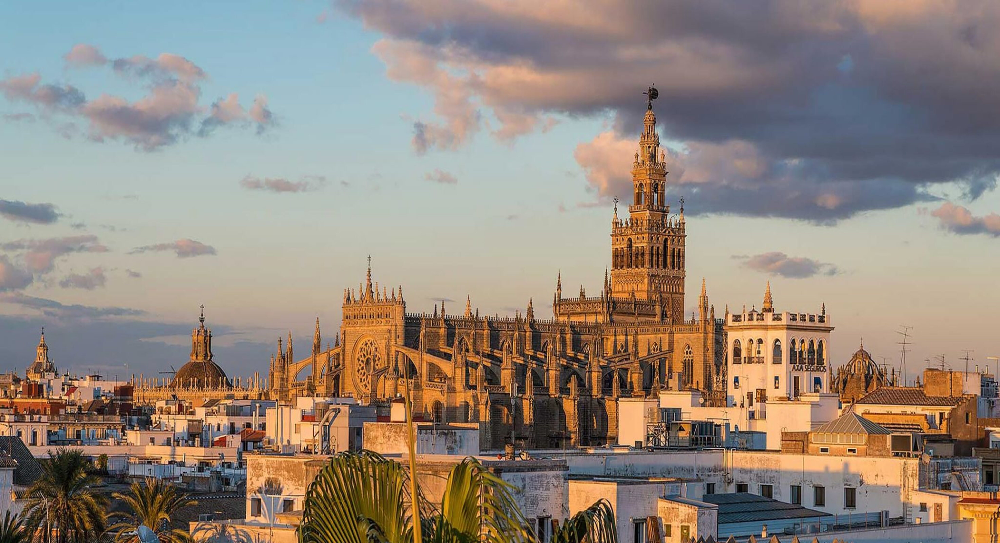
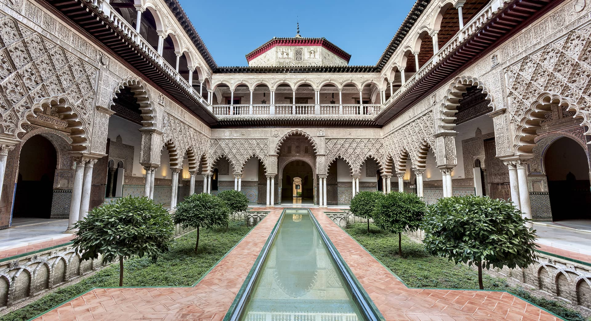
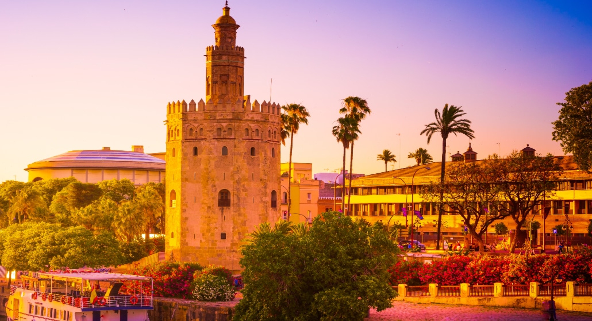
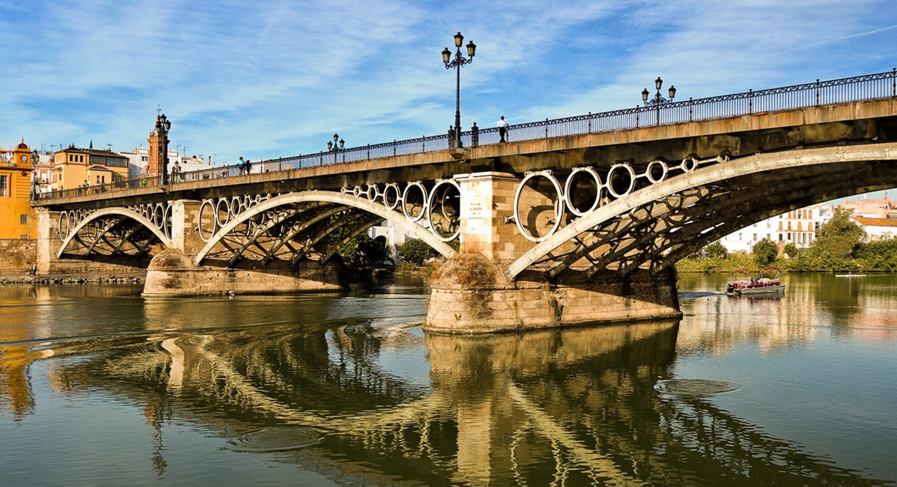
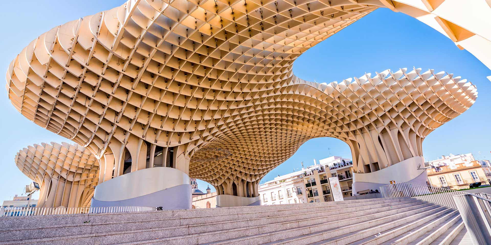
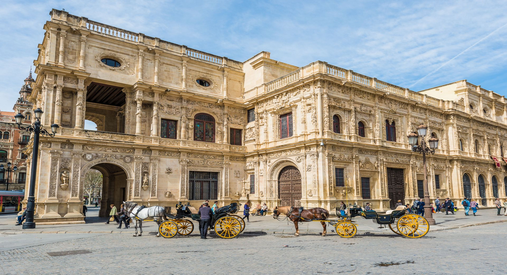

-

-

-

-

-

-

-

-

-

Monumentos de Sevilla
La Plaza de España
La Plaza de España es un espectáculo de luz y majestuosidad. Encuadrada en el Parque de María Luisa, esta plaza fue diseñada...
Más información
La Maestranza
La Real Maestranza de Caballería de Sevilla es una institución de caballería creada en 1670 de la antigua Cofradía...
Más información
El Archivo de Indias
El Archivo General de Indias, antigua Lonja de Mercaderes, fue construido en 1572. Fue proyectado por Juan de Herrera y edificado por Alonso de Vandelviva y Juan de Minjares. En el siglo XVII se construyó...
Más información
Museo de Artes y Costumbres
El Museo de Artes y Costumbres Populares de Sevilla, está localizado en el Parque de María Luisa, dentro de la Plaza de América. Ocupa el Pabellón Mudéjar, edificio construido en 1914, por el arquitecto...
Más información
Palacio de Dueñas
El interés arquitectónico de este edificio, ejemplo de la arquitectura nobiliaria sevillana, radica en la mezcla de estilos gótico y mudéjar. El principal atractivo...
Más información
Casa Salinas
Situada en el área monumental del casco Antiguo de Sevilla, a dos pasos de la catedral, La Giralda y Los Reales Alcázares, esta casa compartió junto a otras mansiones...
Más información
Palacio de los Marqueses de la Algaba
El palacio con una imponente portada gótico mudéjar que aún hoy se conserva, sigue siendo uno de los grandes desconocidos del patrimonio monumental de la ciudad de Sevilla. Tras un lento y progresivo...
Más información
Pabellon de la Navegación
El Pabellón de la Navegación fue dedicado a las expediciones científicas y a los descubrimientos y avances en la técnica naval. En algunas...
Más informaciónRestaurantes de Sevilla


Restaurante Estraperlo
Dirección:C/Sta. Rosa, 4
Teléfono: +34 +34 954 963 538


Restaurante Ignacio Vidal Felipe II
Dirección: C/Progreso, 27
Teléfono: +34 954 616 496

La Raza Puerto Sevilla
Dirección: Muelle de las Delicias s/n
Teléfono: +34 672 646 041

Sobretablas Restaurante
Dirección: C/Colombia, 7
Teléfono: +34 955 546 451

Manolo León Juan Pablos
Dirección: C/ Juan Pablos, 8
Teléfono: +34 954 237 109


Bodeguita Casablanca
Dirección: C/Adolfo Rodríguez Jurado, 12
Teléfono: +34 954 224 114

Casa Román
Dirección: Plaza de los Venerables, 1
Teléfono: +34 954 228 483
Web: casaromansevilla.com


Casa de La Moneda
Dirección: C / Adolfo Rodríguez Jurado, 3
Teléfono: +34 954 824 443
Web: /barcasalamoneda.com


Restaurante Modesto
Dirección: C/Cano y Cueto, 5
Teléfono: +34 954 416 811

Casa Morales
Dirección: C/García de Vinuesa, 11
Teléfono: +34 954 221 242

La Barra de Inchausti
Dirección: C/ Tomás de Ibarra, 10
Teléfono: +34 954 871 322